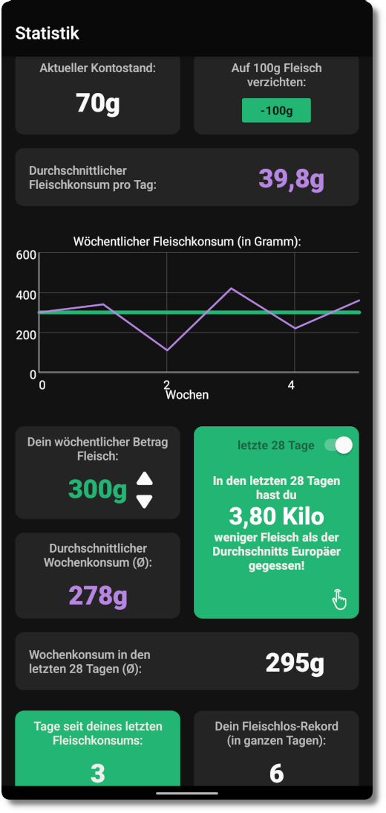

Fleischkonto
Es gibt ja fast kein ähnliches Thema, bei jeder etwas zu sagen hat, und wo man am Ende doch nur mit Halbwissen glänzen kann: Ernährung. Was ist gesund, und vor allem wie viel davon? Gerade beim Fleischkonsum scheiden sich die Geister schnell. Doch hier geht es nicht nur um die Gesundheit, sondern auch um den persönlichen Einfluss auf die Abholzung des Regenswalds, das Tierwohl, die Unterstützung von Bio-Bauern, den Klimawandel und, und und... Als wir vor kurzem wieder einen TV-Bericht über den Fleischkonsum der Deutschen gesehen haben, sind wir uns schnell einig gewesen, dass unserer geringer ist, als der Durchschnitt. Aber wie hoch ist er denn nun tatsächlich?
Zum Glück hat das Internet hier schon eine Lösung parat: Die App MeatAccount!
Mit dieser Android-App (in einer kostenlosen und einer günstigen werbefreien Version erhältlich) protokolliert man sehr einfach den persönlichen Fleischkonsum. Dazu lässt sich auf dem Startbildschirm der App mit wenigen Klicks die zuletzt gegessene Menge Fleisch in Gramm angeben. Es geht nicht darum, Rind-, Schweine- und Hühnchenfleisch zu unterscheiden - alles wird gleich behandelt. Das macht die Benutzung der App sehr einfach.
Allerdings, und das finde ich an MeatAccount sehr gut, regt die App beim Protokollieren schon zum Sparen an. Denn man erhält jede Wochen einen Vorschuss von 300 Gramm Fleisch. Hat man Fleisch gegessen und dies eingetragen, so zieht die App automatisch von den 300g den eingetragenen Verbrauch ab. Warum 300 Gramm? Die Deutsche Gesellschaft für Ernährung (DGE) empfiehlt, dass man pro Woche nicht mehr als 300 - 600 Gramm Fleisch isst. In der App kann man sein Wochenziel variabel einstellen und man sieht gut, wie weit man von der Empfehlung der DGE entfernt ist. Nach mehreren Wochen Benutzung sieht die App bei mir jetzt so aus:
Gar nicht schlecht, oder? Mein Fleischkonsum pendelt im Durchschnitt um 300 Gramm herum (der durchschnittliche Verbrauch in Deutschland lag 2021 bei etwas mehr als 1 kg pro Woche). Erstaunlich finde ich, wie schnell man mit ein paar Bratwürsten in die Nähe der 300 Gramm kommt. Da wurde mir noch mehr bewusst, was für ein Luxus Fleisch früher war, wo der Verbrauch im Durchschnitt in Deutschland unter 600 Gramm lag (Quelle: WWF). Diese 600 Gramm erreicht man sehr sehr schnell.
Wir werden die App auf jeden Fall weiter benutzen. Ich bin gespannt, wie es weiter geht. Freuen würde ich mich, wenn Jannis, der Autor der App, auch einen hellen Modus einbauen könnte. Der dunkle Hintergrund ist ein bisschen deprimierend. 😉 Aber der das soll den guten Eindruck nicht schmälern. Ich finde die App echt gut.